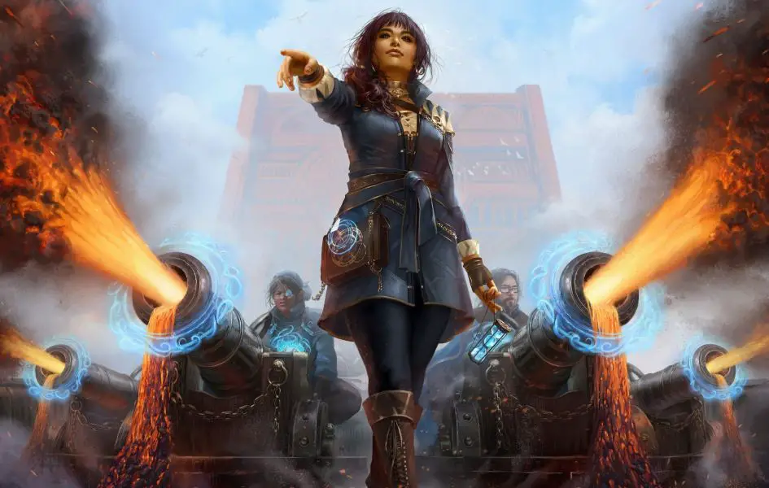
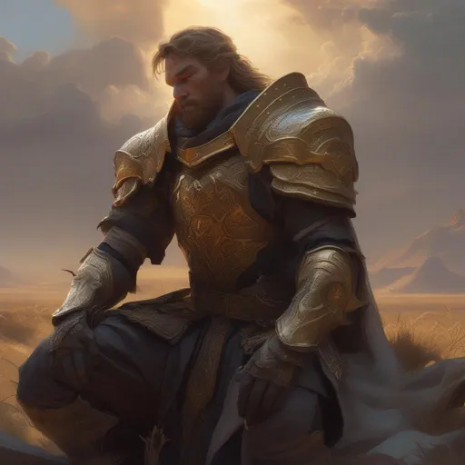
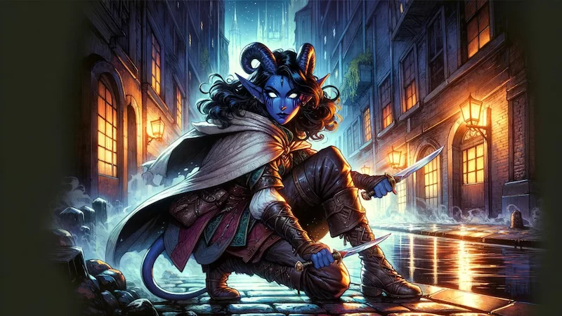
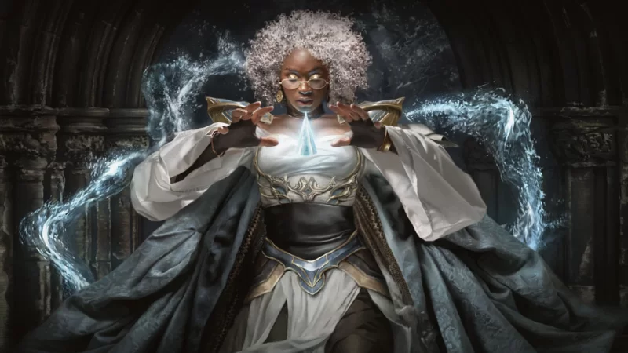
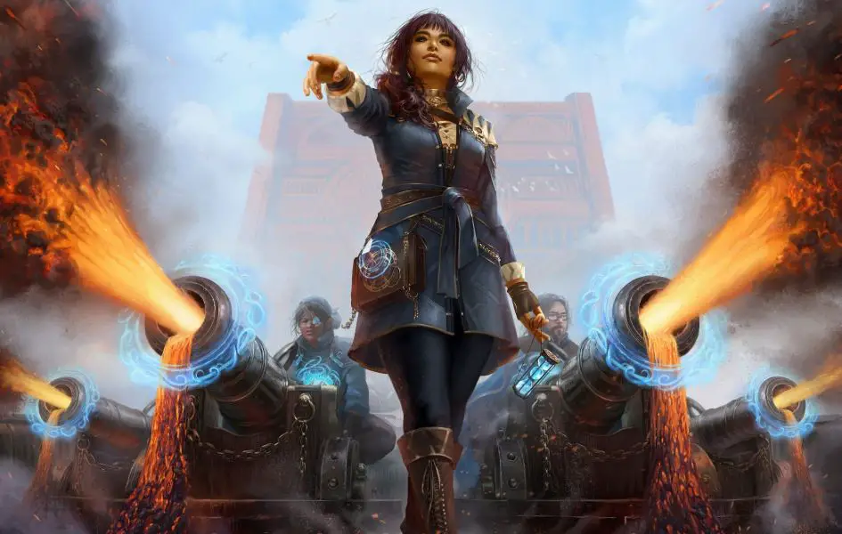
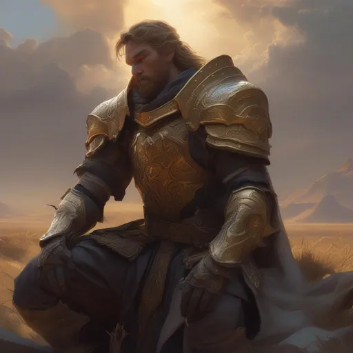
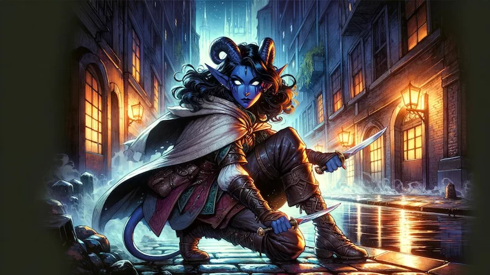
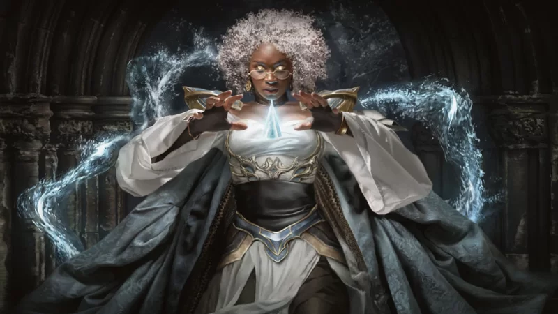
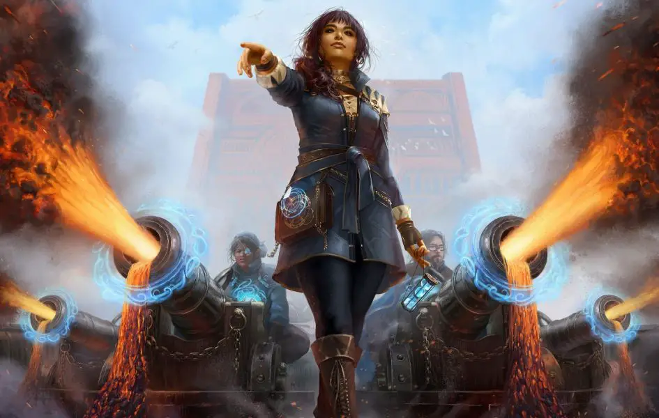
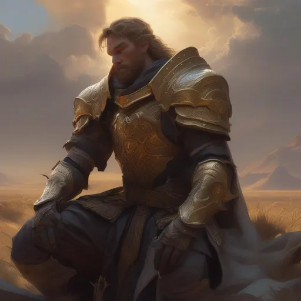
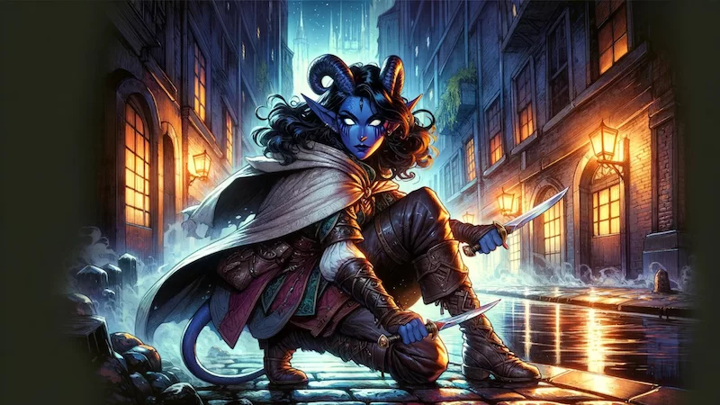
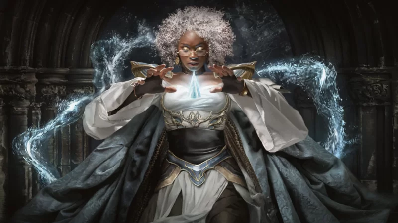
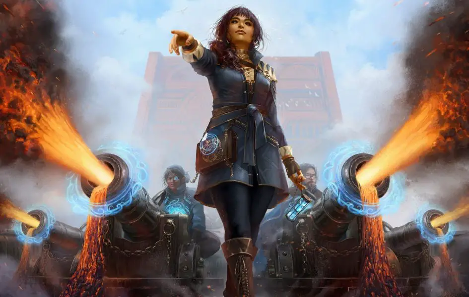
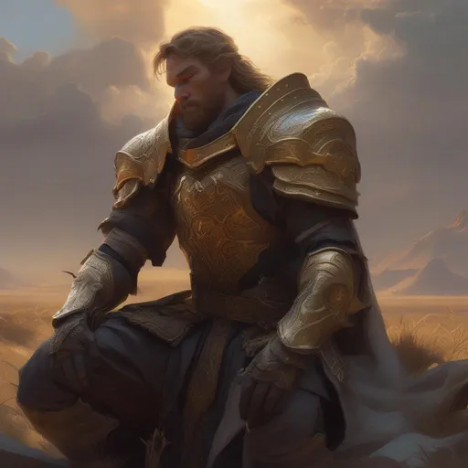
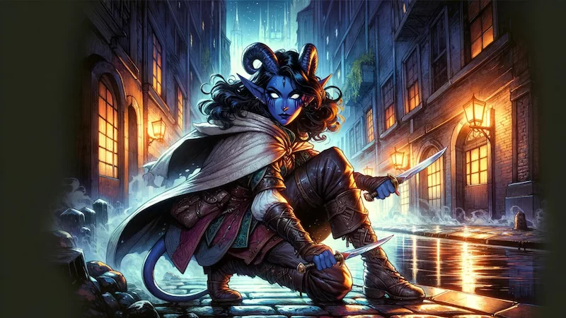
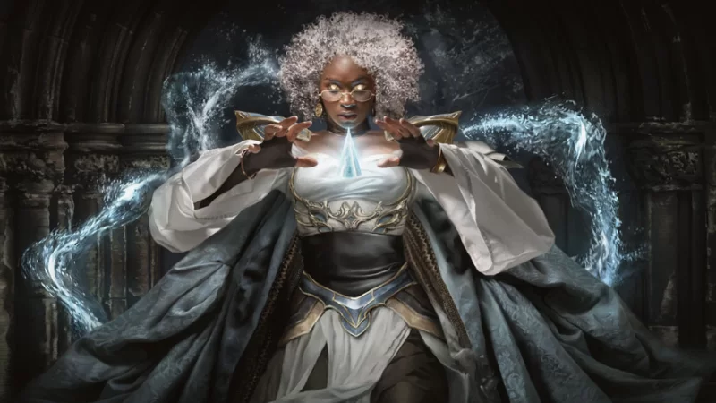
Character creation is one of the most exciting parts of Dungeons & Dragons. It's where you bring your ideas and imagination to life, shaping the hero that you'll guide through epic adventures. The process begins by choosing your character's race, which defines their ancestry and provides unique traits. From the sturdy Dwarves to the mystical Elves, each race has its own strengths, abilities, and role in the world. Next, you’ll select a class, which determines your character’s abilities and playstyle. Whether you choose to be a fierce Barbarian, a strategic Wizard, or a versatile Rogue, each class offers different ways to approach challenges and interact with the world. Alongside race and class, your character’s background plays a crucial role. It influences their skills, knowledge, and even how they view the world, giving them personality and depth. As you build your character, you'll also need to consider their stats, They are Strength, Dexterity, Constitution, Intelligence, Wisdom and Charisma which impact everything from combat to skill checks. The final step is defining their story. Why they became an adventurer, what drives them, and how they interact with others. The process of character creation not only sets the foundation for gameplay but helps you step into a world full of imagination and endless possibilities.